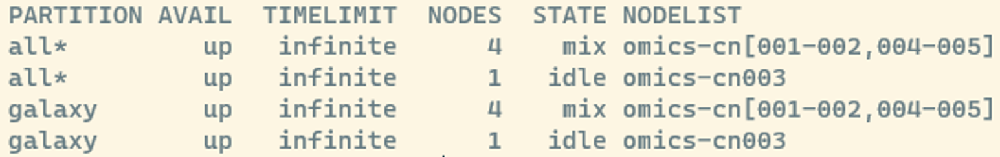

#connect to a server
ssh -X username@serverUsing an HPC
Now, that we are familiar with using the cli, let’s upload our sequencing data to an HPC an run some software to check the quality of our reads.
ssh: Connecting to a sever
SSH (Secure Shell) is a network protocol that enables secure remote connections between two systems. The basic command to login looks like this:
Options:
-Xoption enables untrusted X11 forwarding in SSH. Untrusted means = your local client sends a command to the remote machine and receives the graphical output. We use it since it enables users to run graphical applications on a remote server
If you have access to and want to connect to crunchomics you would connect like this:
ssh -X uvanetid1@omics-h0.science.uva.nl
Important
If you want to log into Crunchomics from outside of UvA you need to be connected to the VPN. If you have not set that up and/or have trouble doing so, contact ICT.
Crunchomics: Preparing your account
If you have not used Crunchomics before, then you want to run a small Bash script that:
- Allows you to use system-wide installed software, by adding
/zfs/omics/software/binto your path. This basically means that bash knows that there is an extra folder in which to look for any software that is already installed - Sets up a python3 environment and some usefull python packages
- Have a link for your 500 GB personal directory in your home directory
To set this up, run the following in the cli:
/zfs/omics/software/script/omics_install_scriptscp: Transferring data from/to a server
scp stands for Secure Copy Protocol and allows us to securely copy files and directories between remote hosts. When transferring data the transfer is prepared from the terminal of your local computer and not from the HPCs login node.
The basic syntax is:
scp [options] SOURCE DESTINATION
To start analysing our data, we want to move our fastq.gz files from our local folder, the source, to a folder on Cruncomics, the destination. Let’s start by:
- Moving from our home directory into our personal directory. We move there since we have more space in the personal directory. Notice, for bash to find the personal directory, we need to have run the
omics_install_scriptscript above first - Make a project folder with a descriptive file name
cd personal/
mkdir projectX
cd projectXInto our project directory, we the want to move the data we have before downloaded with our sequencing data. We do this by moving the data folder we generated before from our local computer to the HPC. Therefore, it is important that:
- we run the following command from the cli on our own computer and not from the cli while being logged into the HPC!
- you exchange the two instances of
usernamein the code below with your username
I am running the code from the data_analysis folder that we have generated in the previous tutorial and I use the -r option since we are moving a folder, not a file.
scp -r data username@omics-h0.science.uva.nl:/home/username/personal/projectX
#check if that worked
ll data/seq_project/*/*fastq.gz
Tip: moving data from the HPC to our own computer
We can also move data from the HPC to our own computer. For example, let’s assume we want to move a single sequencing file. In this case,
- We do not need
-rsince we only move a single file. - We again run this command from a terminal on our computer, not while being logged in the HPC
- We use
.to indicate that we want to move the file into the directory we are currently in. If we want to move the file elsewhere we can use any absolute or relative path as needed
scp username@omics-h0.science.uva.nl:/home/username/personal/projectX/data/seq_project/barcode001_User1_ITS_1_L001/Sample-DUMMY1_R1.fastq.gz .
Tip: moving data from the HPC using wildcards
We can also move several files at once and ignore the whole folder structure by using wildcards when using scp.
#make a random directory to move our data into for testing purposes
mkdir transfer_test
scp data/seq_project/barcode00*/*fastq.gz username@omics-h0.science.uva.nl:/home/username/personal/projectX/transfer_test
#view the data, see how the folder structure is different compared to our first example?
ll transfer_test/*Notice for MAC users:
For Mac users that work with an zsh shell this might not work and they might get an error like “file not found”, “no matches found” or something the like. Without going into details zsh has a slightly different way of handling wildcards and tries to interpret the wildcard literally and tries not to extend the wildcard. If you see the error and you are sure the file exists it should work to edit your line of code as follows:
\scp data/seq_project/barcode00*/*fastq.gz username@omics-h0.science.uva.nl:/home/username/personal/projectX/transfer_testIf that does not work, these are some other things to try (different zsh environments might need slightly different solutions):
noglob scp data/seq_project/barcode00*/*fastq.gz ndombro@omics-h0.science.uva.nl:/home/ndombro/personal/projectX/transfer_test
scp 'data/seq_project/barcode00*/*fastq.gz' ndombro@omics-h0.science.uva.nl:/home/ndombro/personal/projectX/transfer_testSlurm basics
Get information about the cluster
Now, that we have our data prepared we want to run a tool to assess the quality of our reads. Before doing that, let’s talk about submitting jobs to an HPC.
When getting started on a new HPC it is good to know how to get basic information about what nodes are avaiable on a cluster by typing the following command into the cli:
sinfoWe will see something like this:

Here, you see information about the:
- partition: the queues that are available
- state: if a node is busy or not
- mix : consumable resources partially allocated
- idle : available to requests consumable resources
- drain : unavailable for use per system administrator request
- alloc : consumable resources fully allocated
- down : unavailable for use.
- Nodes: The number of nodes
- NodeList: the names of the nodes omics-cn001 to omics-cn005
View info about jobs in the queue
The following command gives us some information about how busy the HPC is:
squeueAfter running this, you can see all jobs scheduled on the HPC:
- JOBID: every job gets a number and you can manipulate jobs via this number
- ST: Job state codes that describe the current state of the job. The full list of abbreviations can be found here
If we would have submitted a job, we also should see it running.
srun: submitting a job interactively
srun is used when you want to run tasks interactively or have more control over the execution. You directly issue srun commands in the terminal, specifying the tasks to be executed and their resource requirements.
Use srun when:
- You want to run tasks interactively and need immediate feedback.
- You are testing or debugging your commands before incorporating them into a script.
- You need more control over the execution of tasks.
Let’s submit a very simple example for which we would not even need to submit a job, but just to get you started.
srun echo "Hello interactively"You should see the output of echo printed to the screen and if you would run squeue you won’t even see your job since everything ran so fast. Now assume you want to run a more complex interactive task with srun then it is good to specify the resources your job needs by adding flags, i.e.
srun --nodes=1 --ntasks=1 --cpus-per-task=1 --mem=1G echo "Hello interactively"Here, each flag means the following:
--nodes=1: Specifies the number of nodes. In this case, it’s set to 1 and tells slurm that we want to use a full node. Only use this if you make use of all resources on that node, otherwise omit.--ntasks=1: Defines the number of tasks to run. Here, it’s set to 1 since we want to use echo once--cpus-per-task=1: Specifies the number of CPUs per task. Adjust this based on the computational requirements of your task--mem=1G: Sets the memory requirement for the task. Modify this based on your task’s memory needsecho "Hello interactively: The actual command you want to run interactively
Choosing the right amount of resources
When you’re just starting, deciding on the right resources to request for your computational job can be a bit challenging. The resource requirements can vary significantly based on the specific tool or workflow you are using. Here are some general guidelines to help you make informed choices:
- Use default settings: Begin by working with the default settings provided by the HPC cluster. These are often set to provide a balanced resource allocation for a wide range of tasks
- Check the software documentation: Consult the documentation of the software or tool you are using. Many tools provide recommendations for resource allocation based on the nature of the computation.
- Testing with Small Datasets: For initial testing and debugging, consider working with a smaller subset of your dataset. This allows for faster job turnaround times, helping you identify and resolve issues more efficiently.
- Monitor the resources usage:
- Use
sacctto check what resources a finished job has used. Look for columns like MaxRSS (maximum resident set size) to check if the amount of memory allocated (–mem) was appropriate. An example command would besacct -j 419847 --format=User,JobID,Jobname,state,start,end,elapsed,MaxRss,nnodes,ncpus,nodelist - For instance, if you would have used
--cpus-per-task=4 --mem=4G, you would expect to use a total of 16 GB of memory (4 CPUs * 4 GB). Verify this with sacct to ensure your job’s resource requirements align with its actual usage.
- Use
- Fine-Tuning Resource Requests: If you encounter performance issues or your jobs are not completing successfully, consider iteratively adjusting resource requests. This might involve increasing or decreasing the number of CPUs, memory allocation, or other relevant parameters.
Run FastQC with srun
FastQC is a quality control tool for high throughput sequence data that is already installed on crunchomics. Let’s use this to run an actually software on our data.
mkdir -p results/fastqc
srun --cpus-per-task=1 --mem=5G fastqc data/seq_project/*/*gz -o results/fastqc --threads 1
ll results/fastqc /*Since we work with little data this will run extremely fast, however, if you would be logged into Crunchomics via a second window and run squeue you should see that your job is actively running:
Additionally, after the run is completed, you should see that several html files were generated in our fastqc folder.
Exercise
Use scp to download the data to your own computer and view one of the html files.
Click me to see an answer
scp username@omics-h0.science.uva.nl:/home/username/personal/projectX/results/fastqc/*html results/fastqc/You could also open a file on Crunchomics with firefox results/fastqc/Sample-DUMMY1_R1_fastqc.html. However, connecting to the internet via a cli on a remote server tends to be rather slow and its often better to view files to your own computer especially if they are large files.
If you want to know more about how to to interprete the output, you can visit the fastqc website, which gives some examples for interpreting good and bad reports.
screen: Submitting long running jobs via srun
One down-side of srun for long running jobs is that your terminal gets “blocked” as long as the job is running and that your job is lost if you loose the ssh connection to the HPC. For long running jobs, there are two ways to deal with this:
- submit a srun job in a screen
- use sbatch
In this section, we will cover how to use Screen. Screen or GNU Screen is a terminal multiplexer. This means that you can start a screen session and then open any number of windows (virtual terminals) inside that session.
Processes running in Screen will continue to run when their window is not visible even if you get disconnected. This is perfect, if we start longer running processes on the server and want to shut down our computer when leaving for the day. As long as the server is still connected to the internet, your process will continue running.
We start a screen as follows:
screenWe detach (go outside of a screen but keep the screen running in the background) from a screen with control+a+d.
If you run multiple things, it can be useful to give your screens more descriptive names. You can do this as follows:
#start a screen and give it a name
screen -S run_fastqcAfter detaching from a screen you can list all currently running screens with:
screen -lsYou can restart a screen like this:
#restart an existing screen
screen -r run_fastqcNow inside our screen, we can run fastqc same as we did before:
srun --cpus-per-task=1 --mem=5G fastqc data/seq_project/*/*gz -o results/fastqc --threads 1 And for long-running jobs we can jump inside and outside of the job, while it is running and at the same time do other things from the cli.
If you want to completely close and remove a screen, type the following while being inside of the screen:
exitsbatch: submitting a job
sbatch is your go-to command when you have a script (a batch script) that needs to be executed without direct user interaction.
Use sbatch when:
- You have long-running or resource-intensive tasks.
- You want to submit jobs that can run independently without your immediate supervision
- You want to submit multiple jobs at once
To run a job script, you:
- create a script that contains all the commands and configurations needed for your job
- use sbatch to submit this script to the Slurm scheduler, and it takes care of the rest.
Let’s start with having some good folder organization to keep our project folder organized:
mkdir scripts
mkdir logsTo get started, assume we have created a script named run_fastqc.sh with the following content in which we want to run fastqc. Notice, how in this script I added some additional commands. Here, I just use this to print some information about the progress which could be printed to a log file but if you have several commands that should be executed after each other that is how you could do it.
#!/bin/bash
#SBATCH --cpus-per-task=2
#SBATCH --mem=5G
echo "Start fastqc"
fastqc data/seq_project/*/*gz -o results/fastqc --threads 1
echo "fastqc finished"To prepare the script:
- run
nano scripts/run_fastqc.sh. - Copy and paste the content you see above.
- Press
ctrl+xto exit nano - Type
Ywhen prompted if the changes should be saved. - Confirm the name by pressing enter
The we can submit run_fastqc.sh with:
#submit job: 754
sbatch sbatch scripts/run_fastqc.sh
#check if job is running correctly
squeueAfter running this, you should see that the job was submitted and something like this printed to the screen Submitted batch job 754.
You will also see that a new file is generated that will look something like this slurm-425707.out. When you submit a batch job using sbatch, Slurm redirects the standard output and standard error streams of your job to a file named in the format slurm-JOBID.out, where JOBID is the unique identifier assigned to your job.
This file is useful as it:
- Captures the output of our batch scripts and stores them in a file
- Can be used for debugging, since if something goes wrong with your job, examining the contents of this file can provide valuable insights into the issue. Error messages, warnings, or unexpected outputs are often recorded here.
Feel free to explore the content of the log file, do you see how the echo commands are used as well?
Tip: sbatch and better log files
We have seen that by default sbatch redirects the standard output and error to our working directory and that it decides itself how to name the files. Since file organization is very important, you find below an example to:
- Store the standard output and error in two separate files
- Redirect the output into another folder, the logs folder
- In the code below, the
%jis replaced with the job allocation number
#!/bin/bash
#SBATCH --job-name=our_fastqc_job
#SBATCH --output=logs/fastqc_%j.out
#SBATCH --error=logs/fastqc_%j.err
#SBATCH --cpus-per-task=2
#SBATCH --mem=5G
echo "Start fastqc"
fastqc data/seq_project/*/*gz -o results/fastqc --threads 1
echo "fastqc finished"
Advanced tip: sbatch and multiple files
With fastqc we are very lucky that it can identify all the fastq files in the directory we specify with -o and use a wildcard. This is extremely useful for us but by far not all programs work this way.
For this section, lets assume that we need to provide each individual file we want to analyse, one by one. How would we run such a job effectively?
What we want to do is created what is called a job array that allows us to:
- Run multiple jobs that have the same job definition, i.e. cpus, memory and software used
- Run these job in the most optimal way. I.e. we do not want to run one job after each other but we also want to run jobs in parallel at the same time to optimize resource usage.
Let’s start with making a list with files we want to work with based on what we have already learned:
ls data/seq_project/*/*.gz | cut -f4 -d "/" > samples.txtNext, we can use this text file in our job array, the content of which we store in scripts/array.sh:
#!/bin/bash
#SBATCH --job-name=my_array
#SBATCH --output=logs/array_%A_%a.out
#SBATCH --error=logs/array_%A_%a.err
#SBATCH --array=1-8
#SBATCH --cpus-per-task=1
#SBATCH --mem-per-cpu=5G
#calculate the index of the current job within the batch
#in our case the index will store the values 1 to 8
INDEX=$((SLURM_ARRAY_TASK_ID ))
#build array structure via ale file names
CURRENT_SAMPLE=$(cat samples.txt | sed -n "${INDEX}p")
#print what is actually happening
echo "Now Job${INDEX} runs on ${CURRENT_SAMPLE}"
#run the actual job
fastqc data/seq_project/*/${CURRENT_SAMPLE} -o results/fastqc --threads 1In the script we use some new SLURM arguments:
#SBATCH --array=1-8: Sets up a job array, specifying the range (1-8). We choose 1-8 because we have exactly 8 fastq.gz files we want to analyse#SBATCH --output=logs/array_%A_%a.out: Store the standard output and error.%Arepresents the job ID assigned by Slurm, and%arepresents the array task ID
The job does the following:
- The
INDEXvariable is storing the value of the currentSLURM_ARRAY_TASK_ID. This represents the ID of the current job within the array. In our case this will be first 1, then 2, …, and finally 3. - Next, we build the array structure:
- The
CURRENT_SAMPLEvariable is created by reading thesample_list.txtfile withcat. - We then use a pipe to extract the sample at the calculated index using sed. Sed is an extremly powerful way to edit text that we have not yet covered but
-n 1pis a option that allows us to print one specific line of a file, here the first one when running array 1. So for the first array the actual code run is the followingcat samples.txt | sed -n "1p". For the next array, we would runcat samples.txt | sed -n "2p"and so forth. - The output of the pipe is stored in a variable, called
CURRENT_SAMPLE. For our first sample this will beSample-DUMMY1_R1.fastq.gz
- The
- We use echo to record what was executed when to store it in the standard output
- We run our actual fastqc job on the file name that is currently stored in the
CURRENT_SAMPLEvariable.
If we check what is happening right after submitting the job with squeue we should see something like this:

We see that jobs 1-4 are already running and the other jobs are currently waiting for space.
If we check the log files we should see:
We see that we get an individual output and error file for each job. In the output we see what value is stored in the INDEX, here 1, and the CURRENT_SAMPLE, here Sample-DUMMY1_R1.fastq.gz.
Installing software
There might be cases where the software you are interested in is not installed.
In the majority of cases, you should be able to install software by using a package management system, such as conda or mamba. These tools allow you to find and install packages in their own environment without administrator privileges. Let’go through a very brief example:
Install mamba
A lot of system already come with conda installed, however, if possible we recommend working with mamba instead of conda. mamba is a drop-in replacement and uses the same commands and configuration options as conda, however, it tends to be much faster. A useful thing is that if you find documentation for conda then you can swap almost all commands between conda & mamba.
curl -L -O "https://github.com/conda-forge/miniforge/releases/latest/download/Miniforge3-$(uname)-$(uname -m).sh"
bash Miniforge3-$(uname)-$(uname -m).shSetting up an environment
Let’s assume we want to install seqkit, a tool that allows us to calculate some statistics for sequencing data such as the number of sequences or average sequence length.
We can do this as follows:
#check if the tool is installed (should return command not found if the software is not installed)
seqkit -h
#create an empty environment and name it seqkit
mamba create -n seqkit
#install some software, i.e. seqkit, into the seqkit environment
mamba install -n seqkit -c bioconda seqkit
#to run the tool activate the environment first
mamba activate seqkit
#check if tool is installed
seqkit -h
#run the tool via srun
mkdir results/seqkit
srun --cpus-per-task 2 --mem=4G seqkit stats -a -To results/seqkit/seqkit_stats.tsv data/seq_project/*/*.gz --threads 2
less -S results/seqkit/seqkit_stats.tsv
#leave the environment
conda deactivateWhen installing the seqkit package we specify that we want to look for seqkit in the bioconda channel with the option -c. Channels are the locations where packages are stored. They serve as the base for hosting and managing packages. Conda packages are downloaded from remote channels, which are URLs to directories containing conda packages. If you are unable to find a package it might be that you need to specify a channel.
Unsure if a software can be installed with conda? Google conda together with the software name, which should lead you do a conda web page, which also should inform you whether you need to add a specific channel to install the software.
A full set of mamba/conda commands can be found here
Exercise
- Download and view the file
results/seqkit/seqkit_stats.tsvon your own computer - Run the seqkit again but this time submit the job via a sbatch script instead of using srun
Click me to see an answer
#question 1
scp username@omics-h0.science.uva.nl:/home/ndombro/personal/projectX/results/seqkit/seqkit_stats.tsv .
#question 2
sbatch scripts/seqkit.shContent of scripts/seqkit.sh:
#!/bin/bash
#SBATCH --job-name=seqkit_job
#SBATCH --output=logs/seqkit_%j.out
#SBATCH --error=logs/seqkit_%j.err
#SBATCH --cpus-per-task=2
#SBATCH --mem=5G
echo "Start seqkit"
seqkit stats -a -To results/seqkit/seqkit_stats.tsv data/seq_project/*/*.gz --threads 2
echo "seqkit finished"